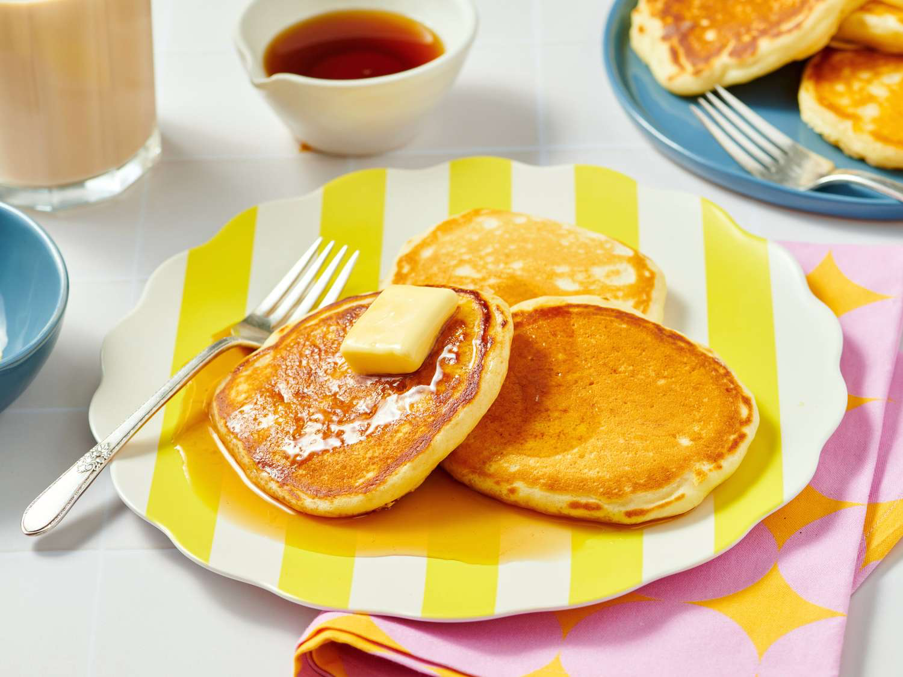

Simple Homemade Pancakes
A quick, easy, and fluffy pancake recipe perfect for a cozy breakfast.
>
>Prep Time
- Prep time: 10 mins
- Cook time: 10 mins
- Servings: 2 people
Ingredients
- 1 cup all-purpose flour
- 2 tablespoons sugar
- 1 teaspoon baking powder
- 1 cup milk
- 1 large egg
- 2 tablespoons melted butter
Instructions
- In a large bowl, mix together the flour, sugar, and baking powder.
- In a separate bowl, whisk the milk, egg, and melted butter.
- Pour the wet ingredients into the dry ingredients and stir until just combined (do not overmix!).
- Heat a lightly oiled skillet over medium heat. Pour batter onto the skillet to form pancakes.
- Cook until bubbles form on top, then flip and cook until golden brown on the other side.